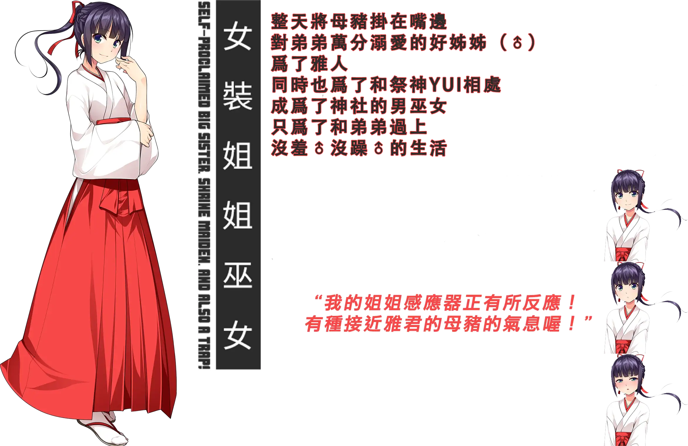
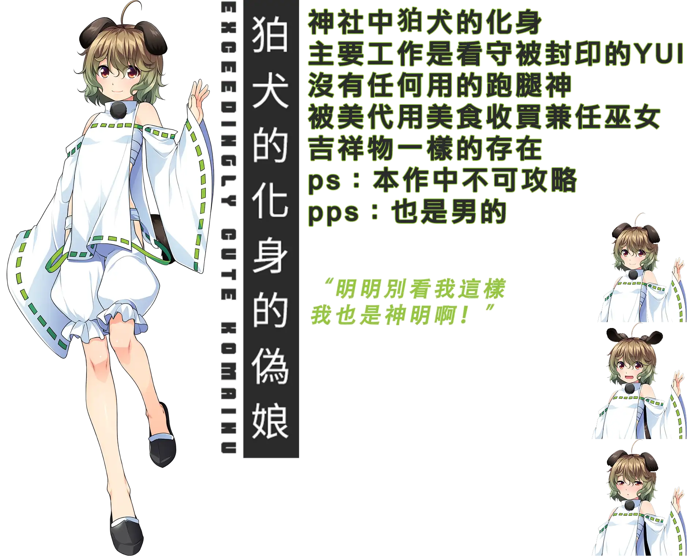

女装神社
作者: Patchouli Knowledge
做爲神社的繼承人而修行的男主 不知爲何只吸引了僞娘，爲了尋求正常的戀愛只好向神明尋求幫助 最後降臨的是被封印的女裝神！

| 資訊一覽 | |
|---|---|
| 開發商 | No Strike（僞娘專業戶） |
| 遊戲時長 | 2 - 4 小時 |
| 類型 | 搞笑 拔作 僞娘 |
| 難度 | 無 |
| 分級 | R-18 |
故事梗概
主人公雅人作爲神社的繼承人，認真修行着，由於父親的病逝不得不擔起神社的大梁。
而他的青梅竹馬美代姐也將作爲男巫女和他一起經營神社。

渴望得到異性戀情的雅人向御神祈求，結果神明真的降臨了，
而神明真的可以滿足他的願望嗎？與偽娘沒羞沒躁的生活就此開始！
登場人物
雅人
本作男主，沒有立繪沒有全名，唯一的設定就是父母雙亡不得不繼承神社，
渴求一段正常的異性戀。
圓騰 美代（cv：橘美月）
結（cv：麻黒ほん）
緋和（cv：スズナ）
遊戲 OP
動畫來自被牆的 steam
這電音，神社蹦迪是吧 🔗️Galgame 金曲：神様妄想桜色
簡評
本作由知名僞娘專業戶 No Strike 製作，人也不藏着掖着，從標題到簡介到 pv 都直球的告訴玩家我就是一部以僞娘爲主題的 gal，劇情也簡單就是角色登場後直接開幹，大幹特幹的拔作，CG 畫風十分不錯，登場人物已在上面全部展示，是否對 xp 請自行判斷。
缺點就是太短了，筆者約 2h 就走完了全部劇情，該公司在短期內連續推出了包括本作的三部僞娘作品，而劇情也是完全連續的，根本就是把一個遊戲拆成了三部分來賣，後面兩部筆者還沒玩過以後有時間一定會再出評測介紹（已經趁着冬促全買了，已經準備將靈魂獻給路西法大人，yooooooooooooooo~
| 評分 | |
|---|---|
| 人設 | ♂/10 |
| 立繪 & CG | 8/10 |
| 劇情 | 2/10 |
| 綜合 | 7/10 |

CG鑑賞
還在猶豫是否下載？
請觀賞 遊戲PV
動畫來自被牆的 steam
資源下載
Steam 經常打折且折後價格也就十元上下可以考慮購入，但遊玩時請注意社死可能（您的好友正在遊玩《女裝神社》.JPG）
群友發的資源：🔗️前往 Telegram 頻道
对于原创内容，文章作者保留所有权利。转载需要许可，如有需要请前往 🔗️Galgame 频道 留言。
另外，复制链接自由，请随意分享。